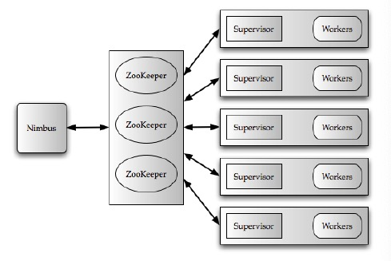

Storm @Twitter
A real-time fault-tolerant and distributed stream data processing system.
Basics
- Storm data processing architecture consists of streams of tuples flowing through topologies. A topology is a directed graph where vertices represent computation and edges represent the data flow.
- Storm is used by groups inside Twitter like revenue, user services, search and content discovery. Most of topologies have <3 stages.
- Storm runs on distributed cluster like Mesos, uses ZooKeeper to keep state and pulls data from queues like Kafka.
Architecture
Overview
- Clients submit topologies to Nimbus, the master node of Storm.
- Nimbus distributes and coordinates the execution of topologies on worker nodes.
- Each worker node runs a Supervisor, which receives assignment from Nimbus and monitors the health of workers.
- Each worker node runs one or more worker processes. Each work process runs a JVM, in which it runs one or more executors made of tasks.
- Worker process serve as containers on host machines. Tasks provide intra-bolt/intra-spout parallelism and executors provide intra-topology parallelism.

Nimbus
- Nimbus is a Thrift service. Topologies are Thrift objects.
- Nimbus stores topologies in ZooKeeper and Jar files of user codes on local disk of the Nimbus machine.
- Nimbus and Supervisor are fail-fast and stateless. States are kept in ZooKeeper or local disks.
Workers
- Each worker has two dedicated threads, a worker receive thread and a worker send thread, to route incoming and outgoing tuples.
- User logic thread runs actual task for input tuples and places output tuples to output queue.
- Executor send thread checks the task identifier of tuples in output queue and writes them to corresponding input queue(destination is same worker) or global transfer queue.

Processing Semantics
- Storm provides two processing semantics, "at least once" and "at most once".
- "At least once" is done by an "acker" bolt. It tracks the DAG of every tuple emitted by spout and acknowledges tasks when output tuple leaves topology.
- Storm generates 64-bit message id for each tuple. Acker bolt uses XOR checksum of message ids to avoid large memory usage for provenance tracking.